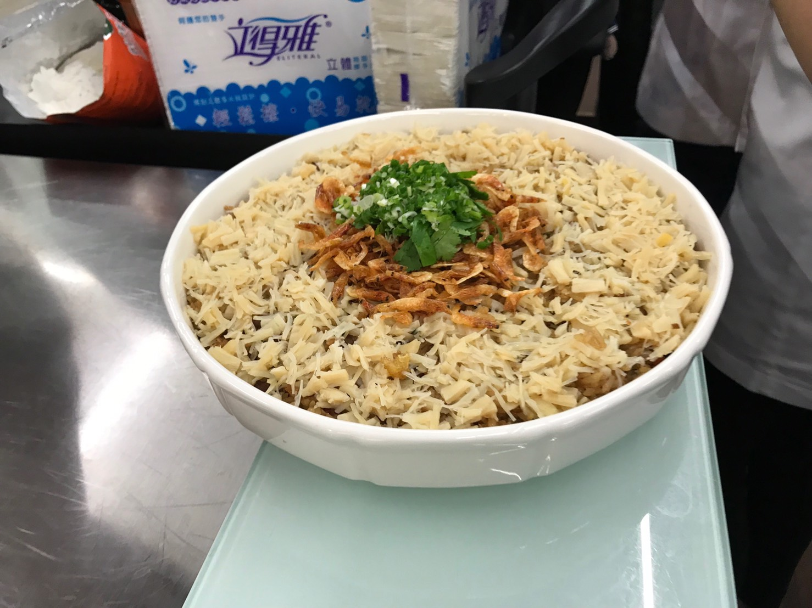

櫻花蝦干貝米糕
材料:
糯米 12兩
碎干貝 1.5兩
青蔥 1兩
乾香菇 6朵
蝦米 4錢
五花肉 1.5兩
櫻花蝦 5錢
紅蔥頭 1兩
新鮮豬油 2.5兩
雞蛋 1.5顆
香菜 10克
調味:
味精 2錢
豬油 8錢
醬油 1兩
米酒 60克
老抽 1.5匙

備料:
1. 香菜切細、蒜頭切末、紅蔥頭切末、蔥切末。
2. 香菇切條再切丁、火腿片切條再切丁。
3. 蝦米泡水過濾。
4. 櫻花蝦(不能洗)過篩。
5. 五花肉去皮、去油脂多餘部分、切條。醃肉:1 匙醬油。
作法:
1. 煮鍋水、糯米洗後放鋼盆+500 克冷水(9 兩)+熱水 500 克拌勻(受熱均勻)。瀝乾
2. 泡米水先倒入鍋中煮開+米(大火)拌 10 下(水變濁)濾乾、倒入網鍋、用手打平(糯米有黏性)。用手指打洞(沾冷水)大火蒸 14 分。
炒料:
1. 1 大瓢油: (1)炸櫻花蝦 160 度、順時針聞到香味、起鍋濾乾。(2)香菇炸到金黃色+五花肉條+火腿片(有香味)+蝦米、起鍋濾乾。
2. 不洗鍋、炸豬油(小火)濾掉。留 8 分滿豬油+紅蔥頭爆香+蔥花(醬油)+調味+炒好的料、續煮、盛起備用。
3. 蛋酥:油 1 瓢 120 度拉高，筷子拌、倒完蛋汁在開中火定型，起鍋前再大火呈將黃色以鍋鏟切碎。
4. 蒸好的糯米飯放入鋼盆(趁熱)+炒好的料(5 匙+油汁)輕拌(飯不糊)+餘料再拌勻+蛋酥拌勻，盛入盤中鋪平後+干貝絲(蒸過撥成絲狀)撲滿留中間，
再入蒸籠，蒸 3 分鐘。取出中間放炸好的櫻花蝦和香菜末。
回首頁
異國料理篇
台灣料理篇
網際網路應用心得